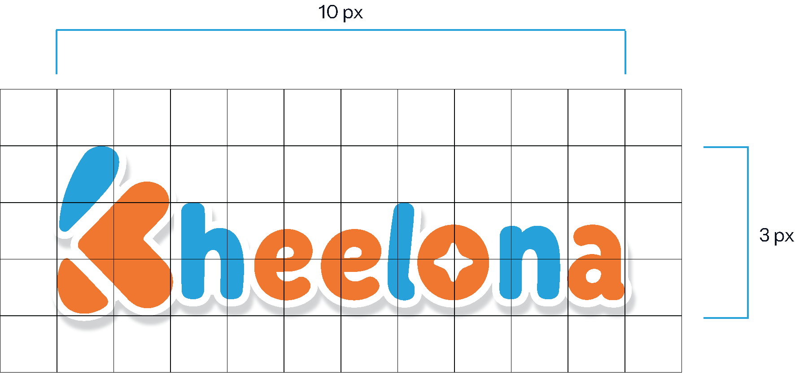

| Reference size | 557 × 155 (≈ 3.59 : 1) |
| Clear space | 10 × 3 unit grid; ≥ 1 unit each side |
| Sticker outline | White, weight 5, outside |
| Drop shadow | X 0 · Y 4 · blur 4 · black 25% |
| Colors | #29A0D7 · #EF762F · #FFFFFF |
Source spec panels preserved in assets/logo/spec-*.png.